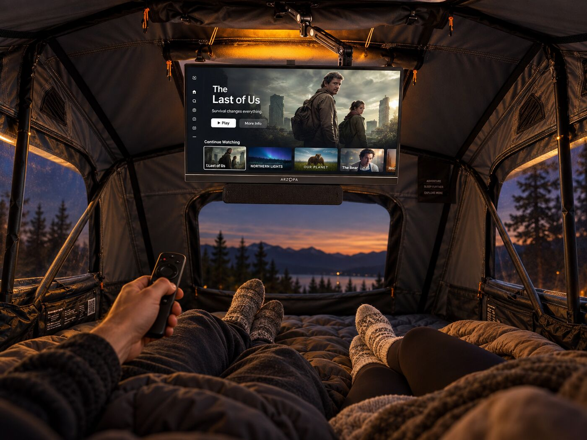
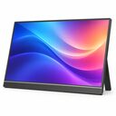
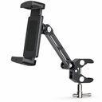
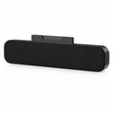
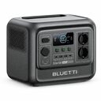

CINÉMA SOUS LA TENTE
Une vraie soirée série, sur le toit de la voiture.
Écran fixé au plafond de la tente de toit, son sous l’écran, streaming dans la télécommande, le tout alimenté par une station électrique. Tout se range en quelques minutes.

L’écranARZOPA écran portable 144 Hz Full HDAmazon ↗
La fixationCreaDream bras articulé en aluminium à pinceAmazon ↗
Le sonZETIY barre de son USB à clipser sur l’écranAmazon ↗- Le streamingXiaomi Mi Box S 4KAmazon ↗

L’énergieBLUETTI Elite 100 V2 station électrique 1024 WhAmazon ↗